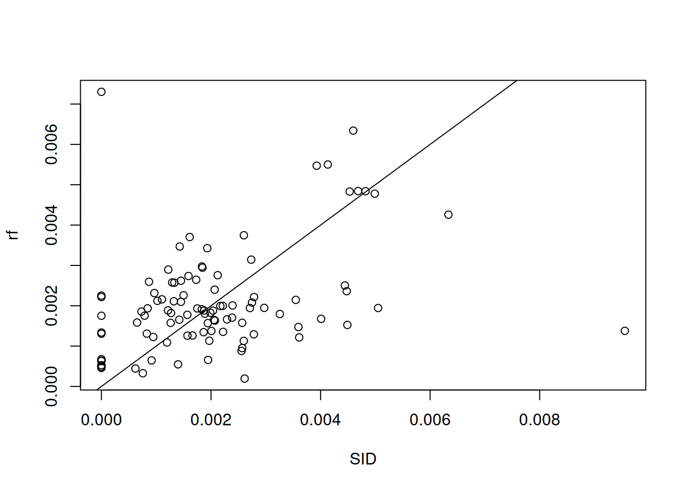

following the lm example of Section 10.2 use a random forest model to predict SID values (e.g. using package randomForest), and plot the random forest predictions against observations, along with the \(x=y\) line.
library(tidyverse)# ── Attaching core tidyverse packages ──────────── tidyverse 2.0.0 ──# ✔ dplyr 1.1.2 ✔ readr 2.1.4# ✔ forcats 1.0.0 ✔ stringr 1.5.0# ✔ ggplot2 3.4.2 ✔ tibble 3.2.1# ✔ lubridate 1.9.2 ✔ tidyr 1.3.0# ✔ purrr 1.0.1 # ── Conflicts ────────────────────────────── tidyverse_conflicts() ──# ✖ dplyr::filter() masks stats::filter()# ✖ dplyr::lag() masks stats::lag()# ℹ Use the conflicted package (<http://conflicted.r-lib.org/>) to force all conflicts to become errorslibrary(sf)# Linking to GEOS 3.10.2, GDAL 3.4.1, PROJ 8.2.1; sf_use_s2() is TRUEsystem.file("gpkg/nc.gpkg", package="sf")|>read_sf()->ncnc|>mutate(SID =SID74/BIR74, NWB =NWBIR74/BIR74)->nc1library(randomForest)|>suppressPackageStartupMessages()r=randomForest(SID~NWB, nc1)nc1$rf=predict(r)plot(rf~SID, nc1)abline(0, 1)

Exercise 10.2
Create a new dataset by randomly sampling 1000 points from the nc dataset, and rerun the linear regression model of section 10.2 on this dataset. What has changed?
pts=st_sample(nc, 1000)nc2=st_intersection(nc1, pts)# Warning: attribute variables are assumed to be spatially constant# throughout all geometrieslm(SID~NWB, nc1)|>summary()# # Call:# lm(formula = SID ~ NWB, data = nc1)# # Residuals:# Min 1Q Median 3Q Max # -0.0033253 -0.0007411 -0.0000691 0.0005479 0.0062218 # # Coefficients:# Estimate Std. Error t value Pr(>|t|) # (Intercept) 0.0006773 0.0002327 2.910 0.00447 ** # NWB 0.0043785 0.0006204 7.058 2.44e-10 ***# ---# Signif. codes: 0 '***' 0.001 '**' 0.01 '*' 0.05 '.' 0.1 ' ' 1# # Residual standard error: 0.001288 on 98 degrees of freedom# Multiple R-squared: 0.337, Adjusted R-squared: 0.3302 # F-statistic: 49.82 on 1 and 98 DF, p-value: 2.438e-10lm(SID~NWB, nc2)|>summary()# # Call:# lm(formula = SID ~ NWB, data = nc2)# # Residuals:# Min 1Q Median 3Q Max # -0.0032981 -0.0008293 0.0000318 0.0005046 0.0062495 # # Coefficients:# Estimate Std. Error t value Pr(>|t|) # (Intercept) 8.082e-04 7.112e-05 11.36 <2e-16 ***# NWB 4.117e-03 1.895e-04 21.73 <2e-16 ***# ---# Signif. codes: 0 '***' 0.001 '**' 0.01 '*' 0.05 '.' 0.1 ' ' 1# # Residual standard error: 0.001182 on 998 degrees of freedom# Multiple R-squared: 0.3212, Adjusted R-squared: 0.3205 # F-statistic: 472.1 on 1 and 998 DF, p-value: < 2.2e-16
we see that the standard error has decreased with a factor 3 (sqrt(10)).
drops for larger dataset, as this is dominated by the standard errors of estimated coefficients.
Exercise 10.3
Redo the water-land classification of section 7.4 using class::knn instead of lda.
Preparing the dataset:
tif<-system.file("tif/L7_ETMs.tif", package ="stars")library(stars)# Loading required package: abind(r<-read_stars(tif))# stars object with 3 dimensions and 1 attribute# attribute(s):# Min. 1st Qu. Median Mean 3rd Qu. Max.# L7_ETMs.tif 1 54 69 68.91242 86 255# dimension(s):# from to offset delta refsys point x/y# x 1 349 288776 28.5 SIRGAS 2000 / ... FALSE [x]# y 1 352 9120761 -28.5 SIRGAS 2000 / ... FALSE [y]# band 1 6 NA NA NA NAset.seed(115517)pts<-st_bbox(r)|>st_as_sfc()|>st_sample(20)(e<-st_extract(r, pts))# stars object with 2 dimensions and 1 attribute# attribute(s):# Min. 1st Qu. Median Mean 3rd Qu. Max.# L7_ETMs.tif 12 41.75 63 60.95833 80.5 145# dimension(s):# from to refsys point# geometry 1 20 SIRGAS 2000 / ... TRUE# band 1 6 NA NA# values# geometry POINT (293002....,...,POINT (290941....# band NULLplot(r[,,,1], reset =FALSE)col<-rep("yellow", 20)col[c(8, 14, 15, 18, 19)]="red"st_as_sf(e)|>st_coordinates()|>text(labels =1:20, col =col)